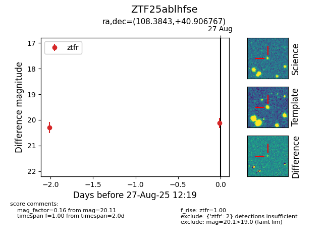

Target ZTF25ablhfse at 2025-08-27 12:19, see:
FINK: fink-portal.org/ZTF25ablhfse
Lasair: lasair-ztf.lsst.ac.uk/objects/ZTF25ablhfse
ALeRCE: alerce.online/object/ZTF25ablhfse
alt names
ZTF25ablhfse (ztf,fink)
coordinates:
equatorial (ra, dec) = (108.3843,+40.90677)
galactic (l, b) = (176.7797,+21.30613)
photometry
last ztfr=20.11
2 ztfr detections
